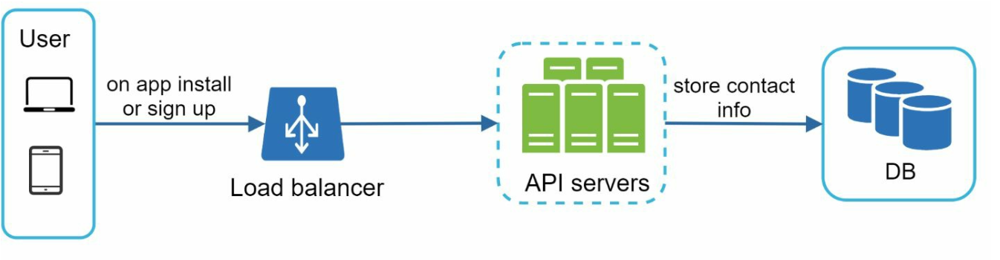
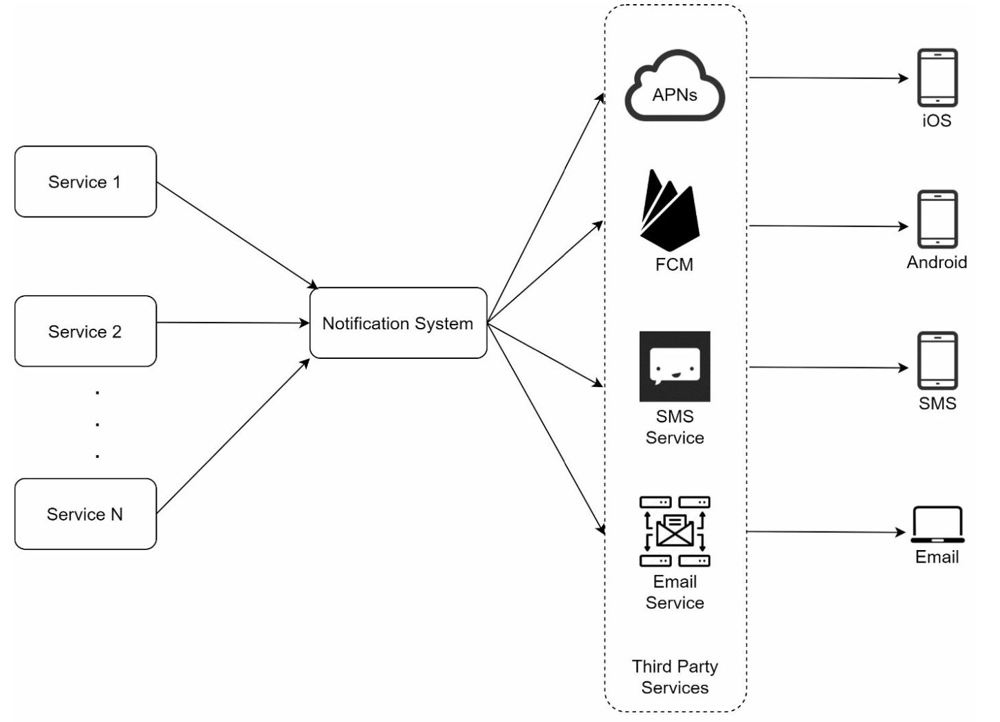

第 10 章：设计通知系统
原章节：Design a Notification System · 原项目路径
10. Notification System/
本章导读
通知系统看起来是全套系统设计题里最简单的一道——不就是"调个第三方接口，把消息推给用户"吗？但把规模拉到一天 1600 万条、要同时对接苹果、谷歌、短信网关和邮件服务商、还要保证一条都不能丢、不能重复发的时候，问题就变得有意思了。
这一章要解决的核心问题是：如何把一个"调 API"的小功能，做成一个能扛住亿级用户、还能处理"一条公告发给一亿人"这种极端场景的分布式系统。
学完这一章，你应该能回答：推送、短信、邮件三种渠道的本质区别是什么？设备令牌为什么会失效、失效了怎么办？为什么"去重"必须在消费端做，而不能在生产端做？一条营销公告要怎么发，才不会把验证码短信挤掉？
你将学到
- 三种通知渠道（APNs / FCM / SMS / Email）的本质差异与选型依据
- 设备令牌（device token）的完整生命周期：获取、刷新、失效、清理
- 用消息队列解耦通知生产与投递的架构，以及它解决了什么问题
- 通知去重的正确做法：为什么去重键是
event_id+user_id，为什么必须在消费端做幂等 - 用户通知偏好（opt-out）与合规要求（GDPR、CAN-SPAM、TCPA）
- 扇出风暴：一条公告发给一亿用户时的分批、限速与优先级队列
1. 需求与规模
任何系统设计都从"要做什么、要做多大"开始。通知系统的需求可以拆成四块。
功能需求
- 通知渠道：推送（Push）、短信（SMS）、邮件（Email）三种。
- 投递时效：软实时（soft real-time），允许秒级延迟，但不允许分钟级、更不允许丢失。
- 覆盖平台：iOS、Android、桌面端。
- 触发方式：既可能由客户端行为触发（比如"你的订单已发货"），也可能由服务端定时任务触发（比如"你的会员明天到期"）。
- 用户偏好：用户可以关闭某一类通知（opt-out）。
规模估算
原笔记给出的日发送量是：
| 渠道 | 日发送量 |
|---|---|
| 推送 | 1000 万 |
| 短信 | 100 万 |
| 邮件 | 500 万 |
| 合计 | 1600 万 |
我们来算一下 QPS（Queries Per Second，每秒请求数）：
日均 QPS = 16,000,000 / 86,400 ≈ 185 QPS
峰值 QPS ≈ 185 × 3 ≈ 555 QPS
为什么要算这个数？ 因为 185 QPS 这个量级意味着：单台服务器扛不住，但也不是特别夸张——一个设计得当的集群，几十台机器就能处理。真正难的不是平均负载，而是两个极端：流量尖峰（比如电商大促时所有订单同时发货）和扇出风暴（一条公告发给一亿人）。这两个场景会在第 6 节展开。
一个容易被忽略的约束
通知是"尽力而为"（best-effort）的。 这一点非常关键，很多初学者会误以为"调用 APNs 接口返回成功 = 用户收到了"。事实是：
- APNs 和 FCM 都不保证送达。设备关机、无网络、用户关闭了通知权限，消息就静静消失了。
- 短信网关也不保证送达，运营商层面的过滤、手机停机都会导致丢失。
- 邮件更不可靠，可能进垃圾箱、被企业防火墙拦截。
所以，如果业务要求"用户一定能看到"（比如验证码、支付结果），就不能只依赖推送。正确的做法是"推送 + 应用内消息箱（inbox）"双保险：推送只负责"提醒用户去看"，真正的消息存在服务端，用户打开 App 时拉取。这条原则会在第 4 节和第 6 节反复出现。
2. 高层设计：三种渠道与核心组件
三种渠道的本质区别
初学者最容易犯的错，是把三种渠道当成"同一个接口的三个参数"。它们的实现机制、成本、可靠性完全不同。
| 维度 | APNs | FCM | SMS | |
|---|---|---|---|---|
| 全称 | Apple Push Notification service | Firebase Cloud Messaging | Short Message Service | 电子邮件 |
| 覆盖平台 | iOS / macOS / watchOS / tvOS | Android / iOS / Web | 所有手机 | 所有平台 |
| 寻址标识 | device token（64 位十六进制字符串） | registration token（约 150 字符） | 手机号 | 邮箱地址 |
| 通信协议 | HTTP/2 provider API | HTTP v1（REST） | SMPP 或服务商 HTTP API | SMTP 或服务商 API |
| 鉴权方式 | 证书（.p12）或 Token（.p8 + JWT） |
OAuth2 服务账号 | 服务商 API Key | SMTP 凭据 / API Key |
| 载荷上限 | 4 KB（VoIP 类 5 KB） | 4 KB | 单条 160 字符（长短信拼接） | 通常 25 MB（含附件） |
| 批量能力 | 一个请求对应一个 token（靠 HTTP/2 多路复用提效） | 一个请求最多 500 个 token | 逐条发送 | 逐条发送 |
| 成本 | 免费 | 免费 | 按条计费 | 极低 |
| 典型延迟 | 亚秒级 | 亚秒级 | 秒级 | 秒到分钟级 |
| 送达保证 | 尽力而为 | 尽力而为 | 尽力而为 | 尽力而为（可能进垃圾箱） |
| 典型用途 | 通知、角标、静默推送 | 同左 | 验证码、紧急告警 | 营销、账单、周报 |
APNs 和 FCM 的关键差异，面试里被问到要能答上来：
- APNs 是苹果自建的、只服务苹果设备的通道。开发者通过 HTTP/2 长连接把消息交给苹果，苹果再分发到设备。因为苹果掌控了从操作系统到硬件的全链路，所以它支持一些 FCM 没有的能力，比如静默推送（silent push，不弹通知但唤醒 App 后台拉数据）和角标（badge）的精确控制。
- FCM 是谷歌的跨平台通道，同时支持 Android、iOS 和 Web。在 iOS 上，FCM 实际上是把消息再转发给 APNs——也就是说，给 iOS 发 FCM 消息，链路上多了一跳。FCM 的优势是支持主题（topic）订阅和设备组（device group），一次请求可以发给一大批订阅了同一主题的设备。
- 两者都要求 App 在前台/后台保持与厂商服务的注册关系，而这个关系是通过 token 维系的——token 一旦失效，推送就发不出去。
组件一：联系信息收集
要发通知，先得有"地址"。

- App 安装时：客户端向 APNs / FCM 注册，拿到一个 device token，然后上报给通知服务器。
- 用户注册时：收集手机号和邮箱。
这些信息存两张表：
| 表 | 存什么 | 用途 |
|---|---|---|
| Device Tokens 表 | user_id、device_token、platform、device_id、updated_at |
推送 |
| User 表 | user_id、phone、email |
短信、邮件 |
这里有个工程细节值得注意：
device_tokens表的主键不能是user_id，因为一个用户可能有多台设备（手机 + 平板 + 桌面端），一个用户对应多行。反过来，同一个 token 也可能绑定过多个user_id——用户在同一台设备上切换账号时，如果 App 没有正确注销旧 token，就会出现"给 A 发推送，结果 B 的手机也响了"的事故。所以推送前必须按user_id精确过滤，并且要在用户登出时主动解绑。
组件二：通知发送流程

三个角色：
- 触发服务（Trigger Service）：产生通知事件的源头。它可能是一个微服务（订单服务发"已发货"）、一个定时任务（cron job 发"会员到期提醒"），或者一个分布式系统。关键点：触发服务不关心通知怎么发，它只负责"抛出一个事件"。
- 通知服务器（Notification Server）：对外提供 API，接收触发服务的请求。它负责：
- 基础校验（邮箱格式、手机号格式是否合法）；
- 查询数据库或缓存，补齐渲染通知所需的数据（用户昵称、订单号等）；
- 把通知事件投递到下游。
- 第三方服务（Third-Party Service）：APNs、FCM、Twilio/Nexmo（短信）、SendGrid/Mailchimp（邮件），真正把消息送到用户手上。
这个初步设计的三个问题
原笔记很诚实地列出了它的缺陷：
- 单点故障（SPOF, Single Point of Failure）：一台通知服务器挂了，整个通知链路瘫痪。
- 难以独立扩展：数据库、缓存、处理逻辑全耦合在一台机器上，没法按瓶颈分别扩容。
- 性能瓶颈：发通知是资源密集型操作，同步等待第三方 API 返回会拖垮服务器。
3. 改进设计：用消息队列解耦

改进思路是三个动作：
- 把数据库和缓存搬出通知服务器，让它们成为独立的、可各自扩展的组件。
- 部署多台通知服务器，前面加负载均衡，消除单点故障。
- 引入消息队列（Message Queue）解耦。
为什么消息队列是这里的关键
假设没有消息队列：通知服务器收到"给 100 万个用户发大促提醒"的请求，就得同步地一个个调第三方 API。这会带来三个后果：
- 通知服务器被长时间占用，无法响应其他请求；
- 第三方 API 限流或超时时，请求失败，需要重试逻辑，而重试逻辑写在同步链路里极其脆弱；
- 流量洪峰直接打到第三方，可能被对方封禁。
引入消息队列之后，链路变成：
通知服务器 → 投递到消息队列（立即返回）→ worker 从队列拉取 → 调第三方 API
通知服务器只负责"把事件写进队列"，这个操作很快，写完就能返回。 真正的发送工作交给下游的 worker（工作进程）。好处是：
- 削峰：洪峰先堆在队列里，worker 按自己的节奏消费，不会打垮第三方。
- 解耦：通知服务器不需要知道有几个 worker、worker 部署在哪。
- 可独立扩展：队列积压了就多加几个 worker，通知服务器一行代码不用改。
消息队列必须持久化。 这一点在第 1 章已经强调过：Kafka、RabbitMQ、RocketMQ 都把消息写到磁盘。如果队列只存在内存里，Broker 重启就会丢掉正在排队的通知——而这些通知里可能有用户正在等的验证码。
消息队列的分区设计
一个实用细节：队列要按渠道（或按优先级）分区（Partition）。
如果把推送、短信、邮件全塞进同一个队列，一个 worker 池要同时处理三种完全不同的下游（HTTP/2 长连接、SMPP、SMTP），代码会变得非常难维护，而且一种渠道的下游变慢会拖垮所有渠道。
合理的做法是按渠道拆队列：
| 队列 | 消费者 | 特点 |
|---|---|---|
push_queue |
Push Worker | 量大，走 APNs/FCM |
sms_queue |
SMS Worker | 量小，成本高，需要严格限速 |
email_queue |
Email Worker | 量大，延迟容忍度高 |
再叠加一层优先级，就得到了第 6 节要讲的优先级队列。
4. 深入设计：可靠性
可靠性要解决两个方向相反的问题：不能丢（漏发），和不能重（多发）。
4.1 防丢失：持久化 + 重试

原笔记的做法是：把通知数据持久化到数据库，并实现重试机制。
具体来说，要引入一个通知日志库（Notification Log DB）。每次要发一条通知，先往日志表里写一条记录（状态为"待发送"），worker 发送成功后再更新为"已发送"。
通知日志表
├── event_id 事件 ID
├── user_id 接收者
├── channel 渠道（push / sms / email）
├── status pending / sent / failed
├── retry_count 已重试次数
├── next_retry_at 下次重试时间
└── created_at 创建时间
有了这张表，才能实现指数退避重试（Exponential Backoff）：第一次失败后等 1 秒重试，第二次等 2 秒，第三次等 4 秒……避免下游短暂抖动时疯狂重试把它打垮。
重试必然带来重复。 这是分布式系统的基本规律：只要允许重试，投递语义就是"至少一次（at-least-once）"，而不是"恰好一次（exactly-once）"。比如 worker 调用 APNs 超时了——它不知道对方到底收到没有，只能重试，于是用户可能收到两条。 所以重试和去重必须成对出现。下一小节讲去重。
4.2 去重：key 的设计才是重点
原笔记说：
Check event IDs to avoid sending duplicate notifications. When a notification event first arrives, check if it is seen before by checking the event ID. If seen before discard it, otherwise send out the notification.
翻译过来就是"用事件 ID 去重，见过就丢弃"。这个思路方向是对的，但 key 设计错了，而且错得很典型。
勘误：只用一个 event ID 去重会漏发 假设运营要发一条"双十一大促"公告给 100 万个用户，触发服务产生的是一个事件，event ID 是
evt_20241111_promo。 如果去重键就是event_id，那么第一个用户被发送后，这个 ID 就被标记为"已处理"——后面 999,999 个用户全部会被误判为重复而丢弃。 正确做法：去重键是 (event_id,user_id) 的组合。它的语义是"这个事件对这个用户是否已经发过"，粒度才是对的。
于是去重逻辑变成：
def handle(notification):
key = f"notif_dedup:{notification.event_id}:{notification.user_id}"
# SETNX + 过期时间：如果 key 不存在则写入并返回 True，否则返回 False
is_first_time = redis.set(key, "1", nx=True, ex=86400)
if not is_first_time:
return # 重复通知，丢弃
send_to_third_party(notification)
用 Redis 的 SET key value NX EX ttl 一条命令同时完成"判断是否存在"和"写入"，天然原子。TTL（过期时间）设成 24 小时，既覆盖了重试窗口，又不会让去重表无限膨胀。
4.3 为什么幂等必须做在消费端，而不是生产端
这是本章最值得琢磨的一个设计问题。
生产端（触发服务）做不了可靠的去重，原因有三：
- 生产端自己就会重试。 触发服务调用通知服务器超时了，它不知道请求到底成功没有，只能重试——重试就会产生重复事件。你没法用一个会产生重复的组件去消除重复。
- 同一个逻辑事件可能有多个生产端。 比如订单服务有两个实例，故障转移时都可能触发一次"订单已发货"通知。
- 消息队列本身只保证"至少一次"。 Kafka 的消费者如果处理完消息但还没提交 offset 就崩溃了，重启后会重新消费这条消息。这是 at-least-once 语义的必然结果，不是 bug。
消费端（worker）才是唯一能拿到"权威状态"的地方：它在真正调用第三方 API 之前，才第一次知道"这条通知到底发出去了没有"。所以：
- 去重检查放在 worker 里，紧挨着第三方调用；
- 用 (event_id, user_id) 作为幂等键；
- 检查与发送之间要尽量缩短时间窗口。
一个绕不开的取舍：先标记还是后标记？
- 先写去重键、再发送（check-then-act）：如果 worker 写完键就崩溃，这条通知会永远丢失（因为键已存在，重试时会被当成重复丢弃）。这是"至多一次（at-most-once）"。
- 先发送、再写去重键：如果发送成功后 worker 崩溃，重试时键不存在，会重复发送。这是"至少一次（at-least-once）"。 现实中的选择取决于业务：营销通知宁可重复也别丢（选后者），验证码宁可丢失让用户重新点一次也别重复（选前者，或者干脆不走这套去重、靠验证码本身的时效性）。没有银弹。
5. 通知偏好与合规
原笔记在需求里提了一句"用户可以 opt-out"，在附加组件里提了一句"通知设置表"，但完全没有展开。这是一个真实的缺口——通知偏好不只是产品功能，更是法律要求。
5.1 偏好的维度：渠道 × 类别
一个常见的设计错误是把偏好做成"开/关推送"。真实场景里，用户想表达的是：
"我不想收营销推送，但订单状态、验证码还是要发给我。"
所以偏好必须是两个维度的笛卡尔积：
| 推送 | 短信 | 邮件 | |
|---|---|---|---|
| 事务类（验证码、订单、安全） | 通常不可关 | 通常不可关 | 可关 |
| 社交类（点赞、评论、关注） | 可关 | 可关 | 可关 |
| 营销类（活动、优惠券） | 可关 | 可关 | 可关 |
存储上就是一张设置表：
notification_settings
├── user_id
├── channel push / sms / email
├── category transactional / social / marketing
├── enabled boolean
└── updated_at
5.2 偏好检查应该放在哪里
必须在发送前检查，而且是在 worker 里检查，不是只在入队时检查。
原因：用户可能在"事件入队"和"worker 真正发送"之间修改了偏好。这个窗口在高负载时可能长达几分钟。如果在入队时就锁定了，用户会收到他刚刚关掉的通知，体验很差（也可能违规）。
但反过来，每条通知都查一次数据库会拖垮 DB。折中方案：
- 偏好数据缓存到 Redis，key 是
notif_pref:{user_id}，TTL 设短一些（比如 5 分钟）； - 用户修改偏好时主动删除缓存（Cache-Aside 模式，见第 1 章）；
- 接受秒级的不一致——这在业务上完全可以接受。
5.3 合规：不是可选项
| 法规 | 地区 | 对通知系统的要求 |
|---|---|---|
| GDPR（通用数据保护条例） | 欧盟 | 处理个人数据需有合法依据；营销通知必须明确同意（opt-in）；必须提供便捷退订；用户有权要求删除数据（right to erasure），删除时要一并清理 device token 和通知记录 |
| CAN-SPAM | 美国（邮件） | 商业邮件必须有清晰的退订链接；退订请求须在 10 个工作日内生效；邮件头（From / Reply-To）必须真实；必须标注为广告 |
| TCPA | 美国（短信/电话） | 营销短信需要事先书面同意（prior express written consent）；限制发送时段（当地时间 8:00–21:00）；违规罚金极高 |
| CASL | 加拿大 | 需明示或默示同意；退订须在 10 个工作日内生效 |
| 《个人信息保护法》 | 中国 | 需告知并取得同意；《通信短信息服务管理规定》要求商业短信须经用户同意并提供退订方式 |
工程上的落地：合规要求最终都会变成几个具体的字段和检查点。
- 设置表里加
consent_at（同意时间）和consent_source（同意来源，比如"注册页勾选框"）——这是被审计时要拿出来的证据。- 退订必须端到端打通：用户在 App 里点了退订，或者回复了短信"TD"，都要能写回偏好表，并且立即影响正在排队的通知。
- 删除账号时，device token、通知日志、偏好记录要一并删除，不能只删用户表。
6. 扇出风暴：一条公告发给一亿用户
这是原笔记完全没覆盖、但生产环境一定会遇到的场景。
场景：运营要给全站 1 亿用户发一条营销公告。
6.1 直接循环会发生什么
假设最朴素的做法是"遍历 1 亿个 user_id，逐个调用发送接口"：
- 单次调用按 50 毫秒（网络往返 + 第三方处理）算，一个 worker 每秒只能发 20 次；
- 总共需要
100,000,000 / 20 = 5,000,000worker 秒； - 即使上 1000 个 worker，也要
5,000,000 / 1000 = 5000 秒 ≈ 83 分钟； - 更糟的是，这 1 亿次调用会瞬间打满 APNs / FCM 的配额，导致正常业务的验证码、订单通知全部被限流——这才是真正的灾难。
6.2 五个正确的做法
① 分批（Batching）
不要一个用户一条消息，而是把用户列表切成批次：
1 亿用户 → 切成 10 万批，每批 1000 人 → 每批一条队列消息
队列里的消息数从 1 亿降到 10 万，降低了 1000 倍。worker 拿到一批后，用第三方支持的批量接口一次发出去——比如 FCM 一个请求可以带 500 个 token，那么 1 亿条推送只需要 100,000,000 / 500 = 200,000 个请求，比逐条发送减少了 500 倍。
② 限速（Rate Limiting）
总发送速率必须被主动钳制在第三方配额之下。假设 APNs 允许 5000 请求/秒：
200,000 个请求 / 5000 = 40 秒（理论下限）
限速的实现方式通常是令牌桶（Token Bucket）：worker 每次调第三方前先从桶里取一个令牌，取不到就等待。这样即使队列里堆了 10 万条消息，出口速率也是平稳的。
③ 优先级队列（Priority Queue）
这是保证"营销不挤掉验证码"的关键。把所有通知按业务重要性分成几档：
| 优先级 | 典型通知 | 处理策略 |
|---|---|---|
| P0 | 验证码、安全告警、支付结果 | 永不限速、永不降级，独立 worker 池 |
| P1 | 订单状态、物流更新 | 正常处理 |
| P2 | 社交互动（点赞、评论） | 系统繁忙时降速 |
| P3 | 营销、活动、推荐 | 系统繁忙时暂停，只占用空闲产能 |
P0 必须有独立的队列和独立的 worker 池，物理隔离。如果只是"同一个队列里排优先级"，那么 P3 的 10 万条消息堵在前面，P0 照样要等——优先级就形同虚设。
④ 按用户限流
单个用户每天收到的营销通知要有上限（比如 3 条）。这既是防骚扰，也是防止某个 bug 导致同一用户被狂轰滥炸。实现上是一个 user_id → 今日已发营销条数 的计数器，放在 Redis 里，按天重置。
⑤ 按本地时间发送
不要在凌晨 3 点给用户发营销推送。 按用户所在时区（或粗略按国家/地区）把发送任务排到当地时间的合理时段（比如 9:00–20:00）。实现上是把受众按地域分桶，每个桶用定时任务在自己的时间窗口内触发。
顺带一提：即使做了分批，去重依然要做。因为批量任务本身可能因为故障转移被触发两次，所以每个批次的处理也要带幂等键（
event_id+ 批次 ID，或者干脆在 worker 内对每个用户再做一次(event_id, user_id)去重）。
7. 其他组件、安全与完整流程
7.1 原笔记提到的其余组件
| 组件 | 作用 | 工程要点 |
|---|---|---|
| 通知模板（Template） | 预置模板，保证格式一致、渲染高效 | 模板要做版本管理；渲染时注意变量转义，防止用户昵称里带恶意内容导致注入 |
| 通知设置 | 用户的 opt-in / opt-out | 见第 5 节 |
| 限流（Rate Limiting） | 限制给单个用户发通知的频率 | 用户级 + 全局级双层限流 |
| 重试机制 | 第三方失败时重试 | 指数退避 + 最大重试次数 + 死信队列（DLQ） |
| 队列监控 | 跟踪队列积压，动态扩缩 worker | 积压量是关键指标，可以驱动自动伸缩 |
| 事件追踪（Event Tracking） | 收集打开率、点击率、参与度 | 归因困难：用户可能在多个渠道收到同一条通知，要设计好归因窗口 |
关于事件追踪的一个坑：打开率（open rate）这个指标很容易被高估。因为推送的"打开"往往只能通过"App 被启动"来推断，而用户可能只是因为别的通知启动了 App。要更准确，需要用**深度链接（deep link）**把用户带到具体页面，再记录页面到达事件。
7.2 安全
原笔记只写了一句"用 AppKey 和 AppSecret 来认证和保护推送 API"。这里需要说清楚，因为它其实混淆了两个不同的鉴权层次：
- 自家 API 的鉴权（AppKey / AppSecret）：这是你的服务对外的鉴权。触发服务调用通知服务器时，用 AppKey 标识身份、AppSecret 签名，防止未授权方调用你的通知接口。这属于常规的 API 网关鉴权。
- 对接第三方通道的鉴权（另一个层次）：
- APNs：用证书认证（
.p12证书，需要定期续期）或令牌认证（.p8私钥签发 JWT，苹果推荐，一个 key 可覆盖所有 App，且不过期）。 - FCM：用 OAuth2 服务账号（下载 JSON 凭据，换取 access token）。
- 短信/邮件服务商：各自的 API Key。
- APNs：用证书认证（
这两层不能混为一谈。 AppKey/AppSecret 保护的是你自己的入口，APNs 证书/令牌保护的是你与苹果之间的通道。原笔记只提了前者，容易让初学者以为"配好 AppKey 就能推送了"。
7.3 完整的通知流程

把前面的组件串起来，一条通知的完整旅程是：
- 触发服务调用通知服务器 API，提交一个通知事件（含
event_id、user_id、模板 ID、变量）。 - 通知服务器校验请求合法性，从缓存或数据库补齐渲染所需的数据（用户昵称、订单号等），做基础校验（邮箱/手机号格式）。
- 通知服务器把通知事件投递到对应的消息队列（按渠道 + 优先级分区），立即返回。
- Worker 从队列拉取事件，执行：
- 去重检查（
(event_id, user_id)）； - 偏好检查（用户是否关闭了该渠道 × 该类别的通知）；
- 限流检查（用户级 + 全局级）；
- 渲染模板；
- 调用第三方服务；
- 更新通知日志状态。
- 去重检查（
- 第三方服务把通知投递到用户设备。
8. 关键优化与小结
原笔记列出的优化项，逐条点评：
- 水平扩展（Horizontal Scaling）：加更多通知服务器分摊负载。✅ 正确，但要注意通知服务器本身应该是无状态的，状态都在数据库、缓存和队列里（呼应第 1 章）。
- 消息队列：解耦处理，应对高并发。✅ 本章第 3 节已展开。
- 缓存：缓存频繁访问的数据，降低延迟。✅ 特别是用户偏好和模板，见第 5 节。
- "Distributed Crawling"：❌ 这条是错的，与通知系统毫无关系，详见文末勘误。
勘误与补充
勘误 1：只用一个 event ID 去重会导致大面积漏发
- 原文说法：
Check event IDs to avoid sending duplicate notifications. When a notification event first arrives, check if it is seen before by checking the event ID. If seen before discard it, otherwise send out the notification. - 问题：一个通知事件（比如一条全站公告）通常会扇出给多个用户。如果去重键就是全局的
event_id，那么第一个用户被发送后，这个 ID 就被标记为"已处理"，后续所有用户都会被误判为重复而全部丢弃。这不是小概率 bug，而是必然发生的功能故障。 - 正确说法：去重键必须是 (
event_id,user_id) 的组合，语义是"这个事件对这个用户是否已经发过"。存储上用 Redis 的SET key value NX EX ttl保证原子性。 - 延伸：这类"幂等键选错粒度"的问题在分布式系统里非常常见。判断幂等键是否正确的方法：问自己"这个 key 唯一标识的是哪一次'副作用'"。这里副作用是"给某个用户发一条通知"，所以 key 必须包含用户维度。
勘误 2：Key Optimizations 里的 "Distributed Crawling" 与通知系统无关
- 原文说法：Key Optimizations 第 4 条 ——
Distributed Crawling: Optimize message delivery geographically for better performance. - 问题：通知系统里没有"爬虫"（crawling）。"Distributed Crawling" 显然是从其他章节（如网页爬虫章节）误抄过来的，与通知投递没有任何逻辑关系。把"分布式爬取"当成通知系统的优化项，会误导初学者。
- 正确说法：这一条应当删除。如果想说"地理就近投递"，正确的表述是：把发送 worker 部署在离第三方服务接入点较近的区域，或者利用 APNs / FCM 自带的全球接入点。这属于部署拓扑优化，与爬虫无关。
- 延伸：原项目是个人读书笔记，出现跨章节抄写残留是正常的。读笔记时保持判断力，比记住笔记内容更重要——这也是本项目做"勘误"的意义。
勘误 3：AppKey / AppSecret 不是对接 APNs / FCM 的鉴权方式
- 原文说法：Security 一节 ——
Use AppKey and AppSecret to authenticate and secure APIs for push notifications. - 问题：这句话把两个不同层次的鉴权混为一谈。AppKey/AppSecret 是你自己的服务对外提供的 API 的鉴权；而对接 APNs / FCM 需要的是完全不同的凭据（APNs 证书或
.p8令牌、FCM 的 OAuth2 服务账号）。只说 AppKey/AppSecret，会让初学者以为配好它就能推送。 - 正确说法：鉴权分两层——对外用 AppKey/AppSecret（或 OAuth2）保护你的通知 API；对下用 APNs 证书/令牌、FCM 服务账号、短信/邮件服务商的 API Key。两层都要配置，且凭据的轮换周期不同。
- 延伸：APNs 的证书认证需要每年续期，忘记续期会导致推送集体失败——这是运维事故的经典原因。苹果推荐改用基于令牌（token-based）的认证，
.p8私钥不过期，且一个 key 可用于多个 App。
勘误 4：APNs 的正确缩写，以及"推送保证送达"的错误预期
- 原文说法：
iOS Push Notifications: Use Apple Push Notification Service (APNS)；整体设计默认"调用第三方成功即送达"。 - 问题：① 苹果官方缩写是 APNs（小写 s），不是 APNS；② 更重要的问题是，全文没有指出推送是"尽力而为"的，不保证送达。设备离线、用户关闭通知权限、token 失效都会导致静默丢失。
- 正确说法：APNs 和 FCM 都是 best-effort 通道。如果业务要求"用户一定能看到"，必须做推送 + 应用内消息箱双保险：推送只负责提醒，真正的消息存在服务端，用户打开 App 时同步。
- 延伸：这个认知直接决定了架构——如果以为推送可靠，就不会设计消息箱；等线上发现"用户投诉没收到验证码"时再补，成本高得多。
补充 1：设备令牌（device token）的完整生命周期
原笔记只说"收集 device token"，完全没有讲它的生命周期管理。这是生产环境最容易出事故的地方。
① 获取（Registration）
App 首次启动时，向 APNs / FCM 注册，拿到 token：
- iOS：
registerForRemoteNotifications()→ 回调didRegisterForRemoteNotificationsWithDeviceToken - Android：
FirebaseMessaging.getInstance().getToken()
App 把 token 连同 user_id、device_id、平台、App 版本上报给通知服务器。
② 刷新（Refresh）
token 不是永久的，它会变。 变化时机包括：重装 App、从备份恢复、清除数据、系统升级、长期未使用。所以客户端必须监听刷新回调并重新上报：
- iOS：每次启动都调用注册方法，拿到新 token 就上报；
- Android：监听
onNewToken()回调。
最常见的线上 bug：客户端只在首次安装时上报 token，从不监听刷新。结果用户换手机后，推送发到了旧 token 上——用户再也收不到通知，而且没有任何报错。
③ 失效（Invalidation）
token 会在以下情况失效：用户卸载 App、注销账号、关闭通知权限、长时间未活跃。
通知服务器怎么知道 token 失效了？ 靠发送时的错误响应：
- APNs：返回
410 Unregistered（并在响应体里带上"该 token 失效的时间戳"），或400 BadDeviceToken。 - FCM：返回
UNREGISTERED或NOT_FOUND错误码。
④ 清理（Cleanup）
收到失效响应后，要立即从 device_tokens 表删除该 token。如果不清，每次发送都会白白调用一次第三方接口，浪费配额、拖慢发送速度。
除了被动清理，还要主动清理：定期删除"超过 N 天（比如 90 天）没有任何 token 刷新、且用户从未打开 App"的记录。
⑤ 多账号 / 多设备的边界情况
- 一个用户多台设备 → 一个
user_id对应多行 token，发送时全部要发。 - 一台设备多个账号 → 同一 token 可能绑定过多个
user_id。用户登出时必须解绑，否则会出现"A 的消息推到了 B 的手机上"这种隐私事故。 - 给同一用户的多台设备发通知时，可以考虑只给最近活跃的一台发（比如用户正在用平板，就不给手机弹），避免多设备同时响铃。
补充 2：用户通知偏好与合规
原笔记在需求里提了 opt-out，在组件里提了通知设置表，但完全没有展开，更没有提合规。详见第 5 节。核心要点：偏好要按"渠道 × 类别"两个维度建模；偏好检查必须在 worker 发送前做；GDPR / CAN-SPAM / TCPA 等法规对营销通知有强制的同意与退订要求，这些最终都要落成数据库字段和检查点。
补充 3：扇出风暴（Fan-out Storm）
原笔记完全没有覆盖"一条公告发给一亿用户"的场景。详见第 6 节。核心要点：分批（把 1 亿条消息压成 10 万条批次）、限速（令牌桶钳制在第三方配额之下）、优先级队列（P0 事务性通知必须有独立的队列和 worker 池，与营销物理隔离）、用户级限流、按本地时间发送。
补充 4：推送不可靠，需要"应用内消息箱"兜底
原笔记没有指出推送的 best-effort 本质。详见第 1 节和第 4 节。核心要点：任何"用户必须看到"的消息（验证码、支付结果、安全告警）都不能只依赖推送，必须有服务端的消息箱，用户打开 App 时同步拉取。
常见误区
| 误区 | 为什么错 | 正确理解 |
|---|---|---|
| 调用第三方 API 成功 = 用户收到了 | APNs / FCM / 短信 / 邮件全部是 best-effort，设备离线、权限关闭、token 失效都会静默丢失 | 重要通知必须配"应用内消息箱"兜底 |
| 用 event ID 去重就够了 | 一个事件会扇出给多个用户，用全局 event ID 会让第一个用户之后的全部被误判为重复 | 幂等键是 (event_id, user_id) |
| 去重放在生产端更省事 | 生产端自己就会因超时重试而产生重复；消息队列本身也只保证 at-least-once | 幂等必须做在消费端（worker），紧挨第三方调用 |
| 消息队列可以只放内存里，快 | 只存内存的组件不提供持久性，Broker 重启即丢消息 | 现代消息队列（Kafka / RabbitMQ / RocketMQ）都持久化到磁盘 |
| 用户 opt-out 只是个产品开关 | 营销通知的同意与退订是 GDPR / CAN-SPAM / TCPA 的法律要求，违规有实打实的罚金 | 同意时间、同意来源、退订链路都要落库并可审计 |
| 偏好只在入队时检查一次就行 | 用户可能在入队后、发送前修改偏好，窗口期可能长达几分钟 | 在 worker 发送前检查，偏好缓存到 Redis，修改时主动失效 |
| 给一亿用户发公告就是多开几个 worker | 会瞬间打满第三方配额，把验证码等 P0 通知一起挤掉 | 分批 + 限速 + 优先级队列物理隔离 + 用户级限流 |
| 群发通知不用考虑用户所在时区 | 凌晨发营销推送会引发大量投诉和退订 | 按用户地域分桶，只在当地合理时段发送 |
| AppKey / AppSecret 配好就能推送 | 那是你自己 API 的鉴权，不是对接 APNs / FCM 的凭据 | 对外用 AppKey，对下用 APNs 证书/令牌、FCM 服务账号 |
| device token 是永久不变的 | 重装、恢复备份、系统升级、长期不用都会让 token 变化或失效 | 客户端监听刷新回调并重新上报；服务端按 410 / UNREGISTERED 清理 |
面试速记
-
一句话概括：通知系统是一个以消息队列为核心、以"至少一次投递 + 消费端幂等"为可靠性基础的扇出型系统，难点在于多渠道异构、设备令牌生命周期管理和极端扇出场景。
-
必答要点：
- 架构：触发服务 → 通知服务器（校验 + 补数据）→ 消息队列（按渠道/优先级分区）→ worker → 第三方服务（APNs / FCM / SMS / Email）。
- 可靠性：通知日志表持久化 + 指数退避重试 + (
event_id,user_id) 去重。 - 幂等位置：去重必须在消费端做，因为生产端会因超时重试产生重复，且消息队列只保证 at-least-once。
- 设备令牌生命周期：注册 → 刷新（监听回调）→ 失效（410 / UNREGISTERED）→ 清理；token 会变，必须持续维护。
- 偏好与合规：偏好按"渠道 × 类别"建模，在 worker 发送前检查；营销通知受 GDPR / CAN-SPAM / TCPA 约束。
-
加分项：
- 主动指出推送是 best-effort，重要通知需要"应用内消息箱"兜底。
- 主动区分两层鉴权（AppKey/AppSecret 对外，APNs 证书/令牌、FCM 服务账号对下）。
- 主动提出优先级队列物理隔离，保证营销公告不挤掉验证码。
- 主动给出扇出风暴的量化估算（1 亿条 → 分批 10 万条 → 批量 500/请求 → 20 万请求）。
- 主动讨论去重键的先后顺序取舍（at-most-once vs at-least-once）。
-
高频追问：
- "用户抱怨重复收到同一条通知，怎么排查？"
→ 先确认重试是否触发了重复（超时后重试是正常的）；检查去重键是不是用成了全局
event_id（应该带user_id）；检查去重键的 TTL 是否短于重试窗口；检查是否有多个生产端发出同一逻辑事件。 - "怎么保证营销推送不影响验证码短信？" → P0 事务性通知走独立的队列和独立的 worker 池，物理隔离；营销走低优先级队列，系统繁忙时暂停；全局和用户级双层限流；两者配额分开申请。
- "device token 失效了但没清理，会有什么后果？" → 每次发送都白白调用一次第三方接口，浪费配额、拖慢整体发送速度；失效 token 占比高时，有效通知的送达率会明显下降。所以要靠 410 / UNREGISTERED 响应被动清理，并定期主动清理长期未活跃的 token。
- "给一亿用户发一条公告，怎么设计？" → 预计算受众并按分片存储 → 切成 10 万批（每批 1000 人）投递到低优先级队列 → 令牌桶限速在第三方配额之下 → 用 FCM 批量接口（500 token/请求）降低请求数 → 按用户时区分时段发送 → 全程带幂等键防重复。
- "用户抱怨重复收到同一条通知，怎么排查？"
→ 先确认重试是否触发了重复（超时后重试是正常的）；检查去重键是不是用成了全局
延伸阅读
- ByteByteGo 系统设计面试课程 — 原笔记的来源
- Apple Push Notification service 官方文档 — 含 token 认证与 410 响应处理
- Firebase Cloud Messaging 官方文档 — 含批量发送与错误码说明
- GDPR 官方全文 — 营销通知的同意与退订要求
- FTC：CAN-SPAM 合规指南 — 邮件营销的强制要求
- FCC：TCPA 与自动呼叫 — 短信营销的同意与时段限制